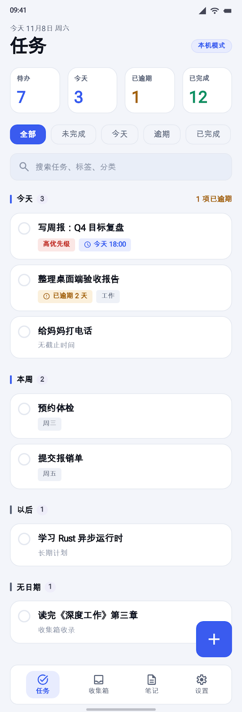 tasks-01545×1600 TaskDock - 任务 完整任务页；无顶栏，统计块/筛选/分组/FAB/中文 Tab 齐全 原目录 taskdock_1 PNG HTML
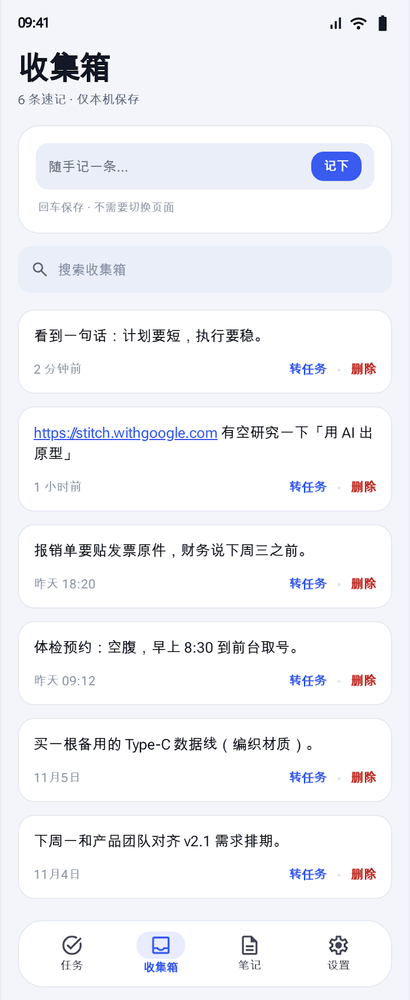 inbox-01657×1600 TaskDock - 收集箱 收集箱；速记输入 + 搜索 + 列表 + 转任务/删除，结构完整 原目录 taskdock_6 PNG HTML
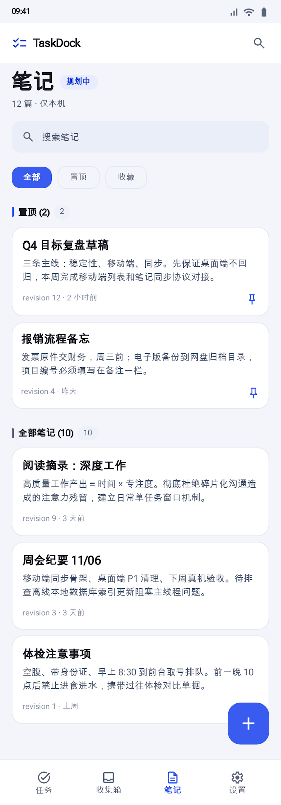 notes-01559×1600 TaskDock - 笔记 笔记列表；顶部品牌栏 + 搜索，规划徽标，FAB/中文 Tab 齐全 原目录 taskdock_14 PNG HTML
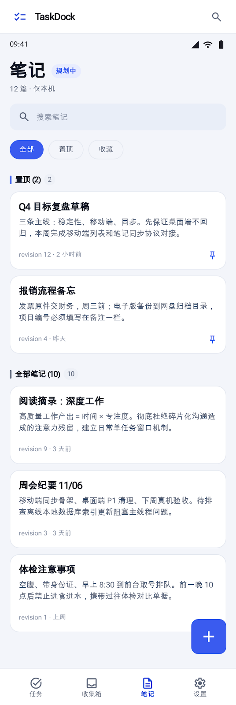 notes-02536×1600 TaskDock - 笔记 笔记列表；顶部汉堡菜单 + 品牌栏，结构同 taskdock_14 原目录 taskdock_16 PNG HTML
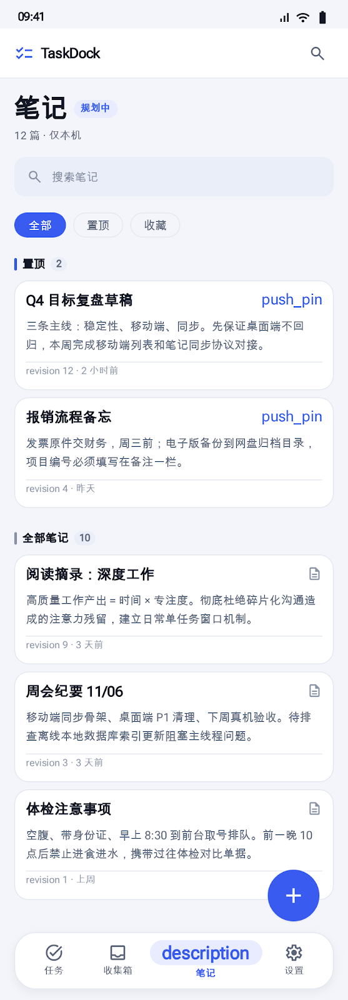 notes-06557×1600 TaskDock - 笔记 笔记列表；原始图标名 push_pin 与 Tab 文案 description 外露，不可用 原目录 taskdock_23 PNG HTML
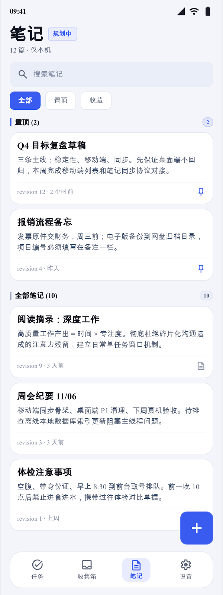 v2 终版 notes-12600×1600 TaskDock Mobile - 笔记 笔记列表；无顶栏、结构完整，v2 终版采用 原目录 taskdock_30 PNG HTML
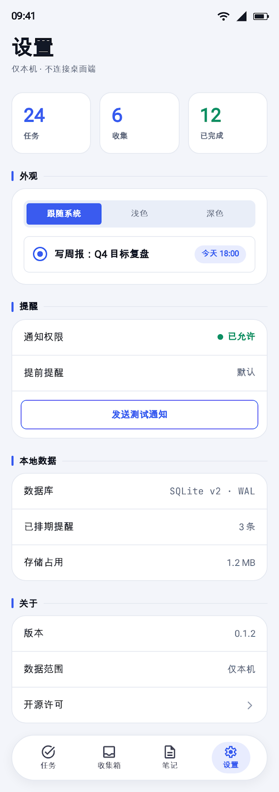 settings-04564×1600 TaskDock Settings 设置页；结构完整，HTML <title> 为英文但界面文案中文 原目录 taskdock_12 PNG HTML
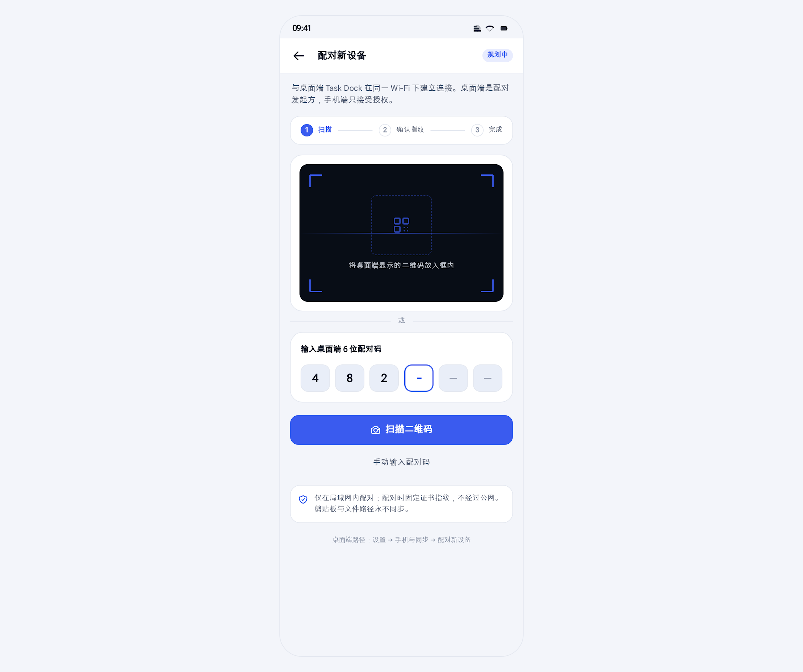 pairing-011600×1340 TaskDock 配对新设备 配对新设备；规划徽标 + 三步 + 取景框 + 6 位码 + 安全说明 原目录 taskdock_8 PNG HTML
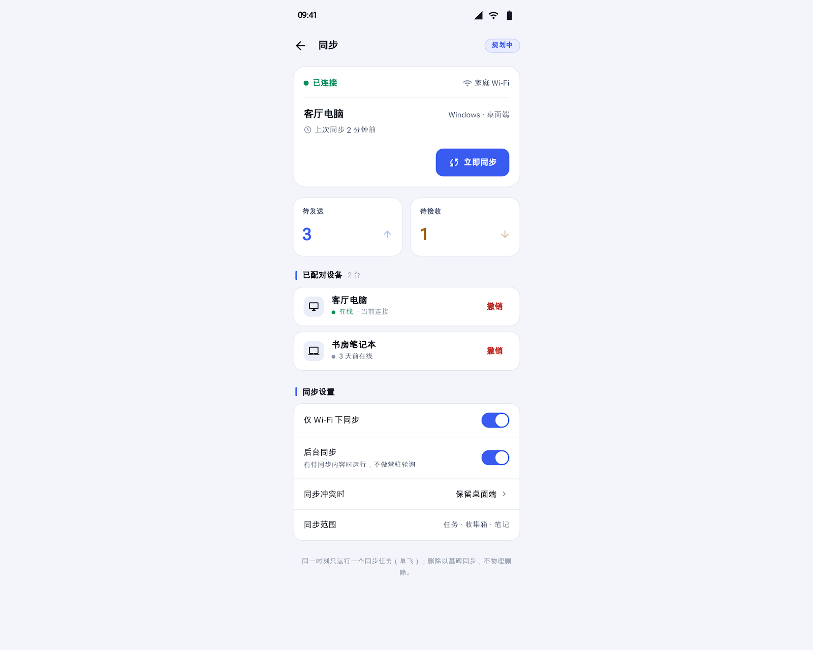 sync-011600×1280 TaskDock 同步 (移动端) 同步中心；规划徽标 + 连接卡 + 待发送/待接收 + 设备行 + 开关 原目录 taskdock_18 PNG HTML
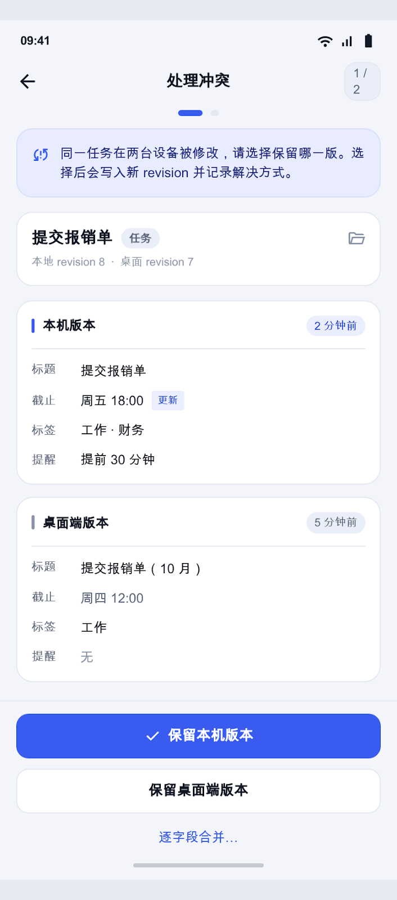 conflict-01706×1600 TaskDock - 处理冲突 冲突处理；返回栏 + 1/2 + 规则卡 + 双版本卡 + 三操作；无规划徽标 原目录 taskdock_28 PNG HTML
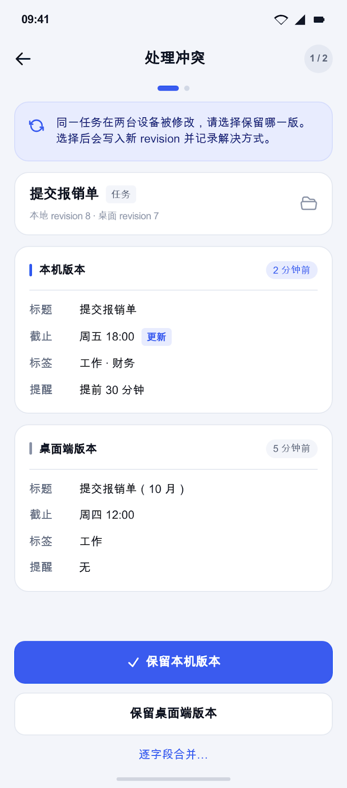 conflict-02706×1600 TaskDock 同步冲突解决 (移动端) 冲突处理；双版本卡 + 三操作；无规划徽标、无底部 Tab 栏 原目录 taskdock_31 PNG HTML
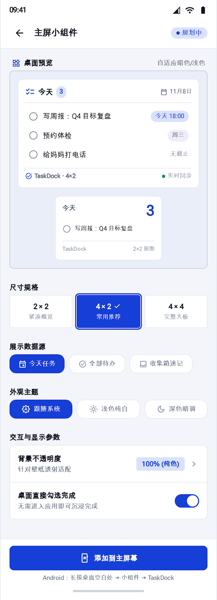 widget-01582×1600 主屏小组件 - TaskDock 主屏小组件；返回栏 + 预览 + 尺寸/数据源/外观/交互 + 添加按钮；含「实时同步」文案 原目录 taskdock_32 PNG HTML
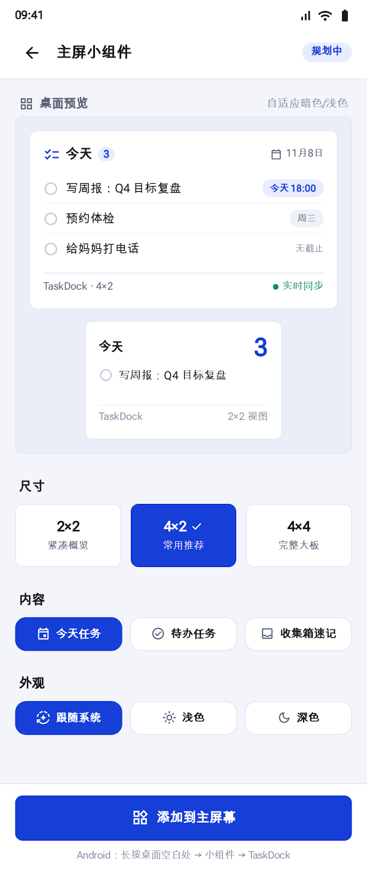 v2 终版 widget-02665×1600 主屏小组件配置 - TaskDock 主屏小组件；配置项最完整，v2 终版采用；含「实时同步」文案 原目录 taskdock_33 PNG HTML